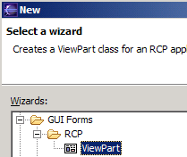
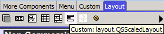
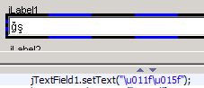
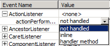
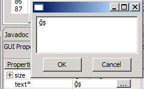
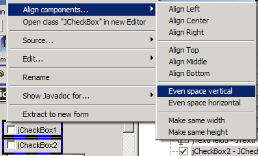

- Support for
org.eclipse.ui.part.ViewPart, as part of initial support for Eclipse
RCP applications. To create a new ViewPart, hit Ctrl+N, then "GUI
Forms->RCP->ViewPart". (See Fig 1)
- JGoodies FormLayout supported (although no support for Builders yet).
- Custom Layouts supported - add them just like adding a custom class, and they will appear in the list of settable layouts, as well as in the layout palette. (See Fig 2)
- Unicode characters are converted to \uNNNN format (when setting text using the GUI property editor) in the generated code. (See Fig 3)
- Objects only created if a visual component in a branch of the main GUI, or a property of a visual component (this should severely reduce the need for the "class creation" preference fields).
- Two options for event handling - inline (an anonymous class is generated) or handler method (an anonymous class is created, and the event handler calls a newly-generated main-class method). (See Fig 4)
- A
list of "GUI initialization" methods (which Jigloo will parse
automatically if they exist) can be specified in the Jigloo preferences
page - for example, if a user initializes the GUI in a method called
"createGUI", then they would add this to the list.
- Text properties can be edited in the small edit area in the property editor, or by a pop-up dialog (for longer text). (See Fig 5)
- Arrow
keys can now be used to move GUI elements. eg, in GridBagLayout you
change the gridx/gridy coordinates, in a null layout you change the x/y
coordinates, and in a Flow layout you change the ordering of elements.
- If SHIFT is held down while dragging the mouse, a red rectangle (selection marquee) allows you to multi-select components. (See Fig 6)
- If
SHIFT is held down while dragging the border of a component in a
GridBag or JGoodies Form layout, then the preferredSize property will
be changed instead of the gridx/y/width/height values.
- Added "even space vertical/horizontal" and "make even widths/heights" options in "Align" menu. (See Fig 7)
- Added SWT "FlowerShop" visual inheritance/JavaBean example (to contrast with the Swing FlowerShop example).
- Swing mnemonics and accelerators now handled.
- Property values can be typed into a combo-box now (eg, "alt B" can be typed in to an "accelerator" combo-box).
- Small performance/useability improvements.
- Use code for Border creation which only uses the minimum number of necessary parameters (eg, for TitledBorder, if only the "title" property is set then the BorderFactory.createTitledBorder(String title) method is created by Jigloo.
- In-line components are recognized - eg, panel.add(new JLabel("inline"));
- Works with Eclipse 3.1 (M1-5a)
- Custom constructors can now be defined in a file called jigloo_constructors, as well as in the ".constructros" file, which is more convenient since the ".constructors" file is hidden in package explorer.
Bug Fixes:
- Multiple-classes defined in same file are handled correctly now - only the class whose name is the same as the class file is now parsed and modified.
- Don't include import for custom classes in same package
- If items moved while multi-selected, layout constraints are managed correctly (eg, in GridBag layout, all elements *don't* end up in the same grid box!)
- If main class was refactored/renamed then changes would not be recognized by Jigloo, leading to a number of possible problems. Now, Jigloo listens for resource-change events and re-loads FormEditor if a GUI class being edited is changed externally (eg, due to a refactoring of the main class name).
- Custom layouts and constraints are now displayed correctly by Jigloo.
- When creating a new class from Navigator (instead of PackageExplorer) class would be created in wrong package.
- Parsed all "init-gui-like" methods, not just constructors and main (allows an init-gui method to be defined but need not be called from a constructor).
- Handled jars added to project build path *not* as "external jars" but as project elements (ie, if a jar/zip was added to a project using the "Add jar" button in the project's build path tab then Jigloo will be able to access classes in it - previously Jigloo could only find classes in jars added using the "Add external jar" button.
- Fixed JSplitPane appearance when dividerLocation is set
- Fixed ownership problem when parsing setComponentForPopup in code (ie, JPopupMenu would not be linked to correct parent Component). This could also lead to a JPopupMenuItem's properties being blank in the property editor.
- Fixed problem caused by setting an Absolute layout for the root element of a form.
- Changes to Border and JSplitPane layout constraints in code are now picked up when the code is reparsed.
- If a container had a layout set, and then the code is changed so that the container has no layout set, then the default layout will be displayed in the form editor.
- The creation of classes *not* used as properties for visual components has now been eliminated. This has led to a speed improvement, and elimination of unwanted side-effects. ie, in older versions, the code was parsed and if the code : FileHandler fh = new FileHandler("log.txt") was parsed then a new FileHandler would have been created by Jigloo (unless this was forbidden by using the Jigloo "class creation" preferences page). In this version, a new FileHandler would not be created.
- Memory-leak fixed
- Other small bugs fixed
|  Fig 1 |
|  Fig 2 |
|  Fig 3 |
|  Fig 4 |
|  Fig 5 |
 Fig 6 |
|  Fig 7 |